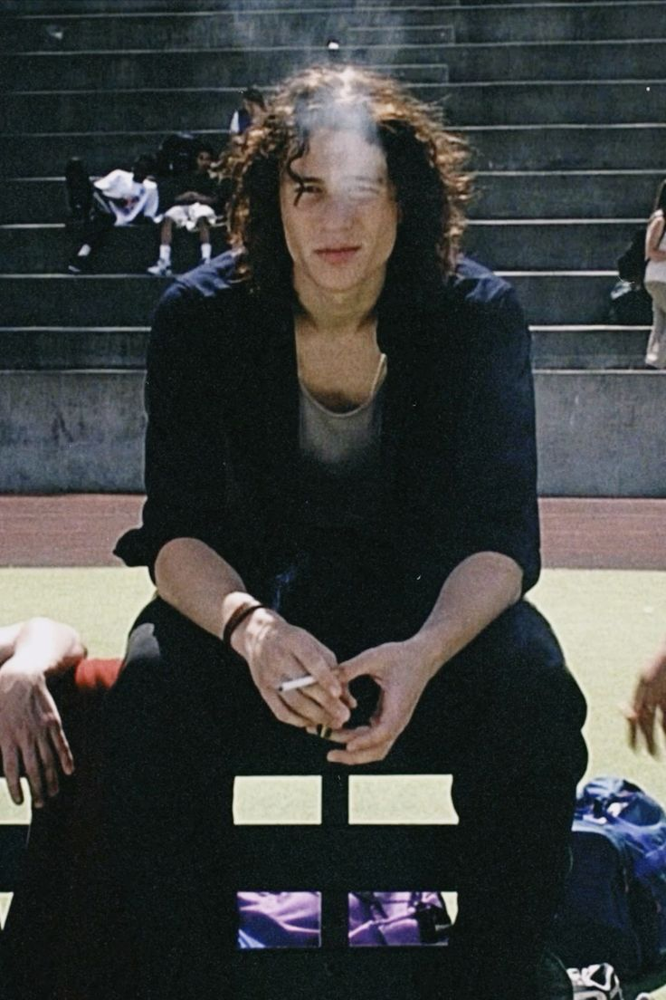
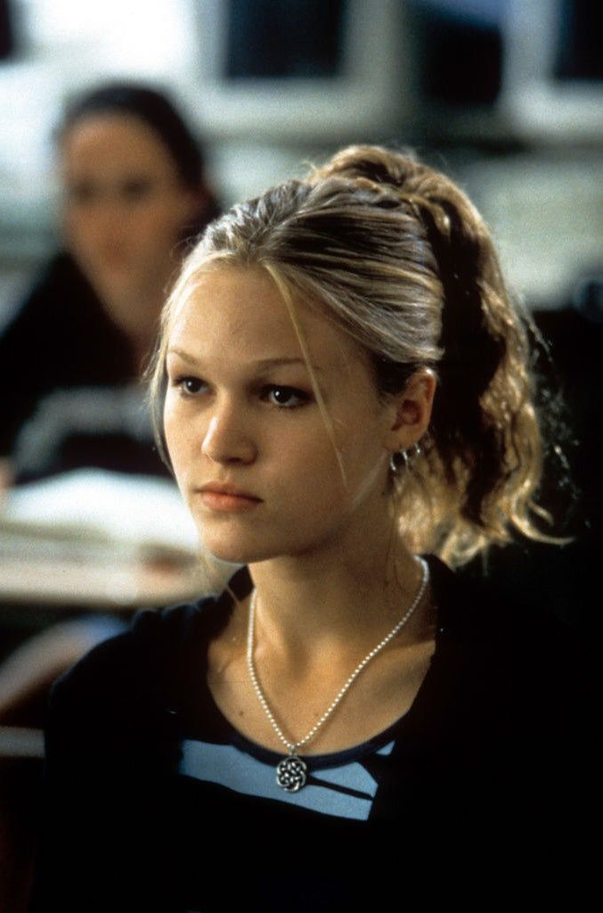
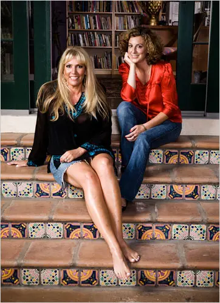

Elenco Principal

Heath Ledger
Personagem: Patrick Verona
O bad boy misterioso que é contratado para sair com Kat, mas acaba se apaixonando por ela genuinamente.

Julia Stiles
Personagem: Kat Stratford
Uma jovem inteligente e independente que despreza as convenções sociais e inicialmente resiste aos avanços de Patrick.

Joseph Gordon-Levitt
Personagem: Cameron James
Um estudante transferido que se apaixona por Bianca e arquiteta o plano para que Patrick saia com Kat.

Larisa Oleynik
Personagem: Bianca Stratford
A irmã mais nova de Kat, popular e doce, que deseja desesperadamente namorar mas é impedida pelas regras do pai.
Equipe Técnica

Gil Junger
Diretor

Karen McCullah &
Karen McCullah &
Kirsten Smith
Roteiristas
Andrew Lazar
Produtor